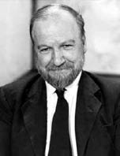

(1911 – 1993)

İnsan doğasının açmazlarını ve insanın neden vahşete eğilimli olduğunu incelemeye çalışan "Sineklerin Tanrısı" romanıyla edebiyat tarihinde özel bir yere sahip olan William Golding, yazdıklarında bir yandan insanın karanlık yönlerini incelerken bir yandan da aydınlık yönlerine olan inancını yineleyip duruyordu.
William Gerald Golding 19 Eylül 1911'de, Britanya'nın Cornwall kentinde dünyaya geldi. Babası Alec Golding, sosyalist değerlere ve pozitif bilime inanmış değerli bir bilim insanıydı. Annesi Mildred da kadınların oy kullanması ve kadın özgürlüğü konularında çalışan bir aktivistti. 1930 yılında Oxford Üniversitesi'nde Doğa Bilimleri öğrenimine başlayan Golding, iki yıl sonra İngiliz Edebiyatı okumaya başladı.
1934 yılında Oxford'dan mezun olan yazarın ilk kitabı Şiirler de aynı yılın sonlarında yayımlandı. 1939 yılında kimyager Anne Brookfield'la evlenen Golding'in iki çocuğu oldu. 1940 yılında Britanya Krallık Donanması'na katılan yazar, II. Dünya Savaşı'nda aktif olarak görev yaptı ve savaşın ardından öğretmenlik ve yazarlık yapmaya başladı.
1954 yılında, yazarın adını sonradan dünya çapında duyuracak olan Sineklerin Tanrısı adlı romanı yayımlandı ve büyük başarı kazandı. Bu kitabını; Serbest Düşüş (1959), Akrep Tanrı (1971), Deniz Üçlemesi [Geçiş Ayinleri (1980), Yan Yana (1987) ve Aşağıdaki Yangın (1989)] gibi eserleri takip etti.
1985 yılında ailesiyle birlikte Cornwall'a taşınan William Golding, 19 Haziran 1993 tarihinde bir kalp krizi sonucu ölene dek burada yaşadı. Yazarın öldüğü sırada üzerinde çalıştığı Çatal Dil adlı romanı ise ölümünden sonra, 1995'te yayımlandı.
1983 yılında Nobel Edebiyat Ödülü'nü kazanan William Golding, aralarında Booker Ödülü'nün de bulunduğu birçok edebiyat ödülünün sahibiydi.
Seçme Romanları: Sineklerin Tanrısı (1954 – Türkiye İş Bankası Yayınları, 2010), Serbest Düşüş (1959), Piramit (1967), Kağıt Adam (1984), Bir Mısır Güncesi (1985), Deniz Üçlemesi (1980-1987-1989), Çatal Dil (1996)